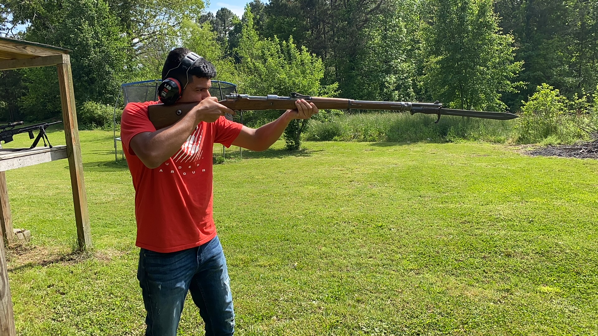

About Me
I first got into firearms after I came home from initial training with the Marines. Before I say anything else, I will make this clear: being in the military does not qualify you as a firearms expert. I had a friend that had a father who built AR-15s as a hobby, so that's how I began the wonderful experience of periodically burning through my wallet.
As time went on, I began to learn more about the companies that manufacture the parts, as well as researching on what calibers to use for different firearms and what purpose each firearm would serve you personally based on its features. A great place that I used to find more information about manufacturer reputations and product reliability is, surprisingly, Reddit. There are other forums that do a great job, too (AR15.com), but I mainly got all of my knowledge through Reddit. Reddit is also a surprisingly great place to purchase new or used parts and accessories for really great prices.
Home
Some of my favorite hobbies to partake in would be firearm construction and target shooting. They go hand in hand with each other and I've actually learned a bit of machining to go along with firearm construction. I strongly encourage anyone who is interested in firearms to learn more about them and get hands on experience with them. It is imperative to always maintain safety, as it is number one priority when messing with these tools.
I want to educate and explain the usage of firearms, as well as how to handle them safely. It is encouraged to enjoy this hobby to the fullest, but I do not want to see or hear of anyone injuring themselves or other people due to negligence on their behalf. I will NOT go into detail on how to manufacture or sell firearms.
Best Time to Get Into Firearms
Honestly, there is no best time to get into firearms. I just happened to get into them amidst a pandemic, where it was discouraged to go out and socialize like normal. I also made some money from the volatile stock market at the time, which helped fund my projects and even paying my university fees. During the pandemic, gun and ammo prices were through the roof; I wish I got into them prior the pandemic, but the past cannot be changed.
If I go shoot, it is typically whenever I am free and have a decent amount of ammunition. I have not been able to shoot since I started this fall semester, as I have been too busy knocking out long assignments and getting involved with the university more. The military isn't too kind with my time either, as weekends that would otherwise be free are take up by my unit. Shooting involves a lot of free time to perfect and also requires a lot of money to be spent.
Where I Go To Shoot
I typically prefer shooting on private land owned by a friend. I despise going to indoor ranges, as those ranges only go up to 25 yards, as well as encountering potentially dangerous people that would cause safety violations near me. If you own a handgun, indoor ranges are best, but not with carbines or long guns. It is best to train and explore this hobby in a place that's open and secluded from everyone else. If you go to a public range, go to one that is outdoors and in the country, but your best choice is to go on open land owned by a trusted friend or the Federal government.
Here are some resources on where to go shooting at (Also great personal recommendations):
How to Safely Handle and Shoot Firearms
How do you safely handle a firearm? There are four main safety rules when handling firearms:
- Treat every firearm as it were loaded
- Never point a firearm at anything you don't want to shoot at
- Keep your firearm on safe until you're ready to fire
- Keep your finger off the trigger until you're ready to fire
By constantly enacting these practices, you are guaranteed to have a good time with yourself and everyone around you. Firearms are NOT toys and should never be played around with.
To fire any weapon, you must follow these steps:
- Keep finger off the trigger when picking up the weapon and point in safe direction
- Load a full magazine.
- Pull charging handle or slide back to chamber in a live round, then put weapon on safe (if able to).
- Aim at your intended target with your sights or optics.
- Put weapon on fire and pull the trigger with a slow steady squeeze.
- Repeat until you want to stop or weapon is out of ammo. When finished, put weapon on safe.
If you ever desire to modify your weapons, feel free to attach whatever is necessary to accomplish your goals. Feel free to spray paint them, but if you decide to attach other things to your weapons, do not buy modifications from Amazon. Do not cheap out on parts or accessories. Buy name brand products that are proven to be reliable and fit within your budget at the same time. Buy quality scopes and mounts that will be able to hold zero through hundreds of rounds fired.s
Why is it Important
The ability to own firearms is guaranteed by the Second Amendment of the US Constitution. The reason behind that is not because of defending yourself against criminals or to use for hunting, rather the Second Amendment exists to defend yourself against tyranny if it ever comes to that situation. There are many confusing laws and regulations passed by both state and federal governments, so it's best to live in a state that has fewer restrictions and to acquire fully legal firearms. Knowing safety rules on top of knowing regulations is the best way to keep yourself out of unwanted trouble.
If you have any questions about the laws or regulations, feel free to ask me below: